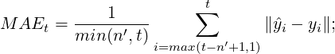
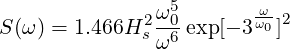
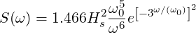
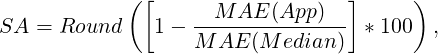

our abstract. Ça va? (Yes accented characters work.)
1.1 Overview of Steps

(1.1)

(1.2)

(1.3)

(1.4)
I tweaked the latexmkrc file so that make4ht is run along with pdflatex,
so the HTML export is done only if you set your project to be compiled
with pdflatex.
(make4ht doesn’t work well with fontspec; I haven’t time to try this
workflow with XeLaTeX nor LuaLaTeX yet. So let’s just leave it at
pdflatex first, yeah?)
my.cfg contains the settings I usually use in my workflow:
Output math as MathML, and render it in browsers using MathJax.
When \includegraphics uses .jpg, .png, .jpg, .svg, use the files
directly for the HTML without conversion.
When \includegraphics uses .eps and .pdf, convert them to .png
using ImageMagick convert, and use those for the HTML.
Tikz drawings are output as .svg.
I’ve included some CSS styling. You can add a separate .css file for
further styling.
When compilation is complete, use the steps at View generated files to
download each generated file required. There’s also a allfiles.zip that
contains all generated files.
1.1.1 Caveats
This is an experimental hackety hack – things may just not work! More
a proof-of-concept rather than a stable solution on Overleaf at present.
tex4ht doesn’t work well with fontspec nor authblk.
Avoid \mathbf – this broke MathML and MathJax for me.
Avoid, or re-define the multicol environment to do nothing – tex4ht will
really export text in two or three columns by PDF page, and it’s not the
most readable.
1.2 Introduction
Your introduction goes here!
1.3 Some LATEX Examples
1.3.1 How to Include Figures
First you have to upload the image file (JPEG, PNG or PDF) from your
computer to writeLaTeX using the upload link the project menu. Then use
the includegraphics command to include it in your document. Use the
figure environment and the caption command to add a number and a
caption to your figure. See the code for Figure 1.1 in this section for an
example.
Fig. 1.1:This frog was uploaded to Overleaf via the project menu. The .jpg
file will be used as-is in the HTML export.Fig. 1.2:PDF images will be converted to PNG when exported to HTML.
1.3.2 How to Make Tables
Use the table and tabular commands for basic tables — see Table 1.1, for
example.
Item
Quantity
Widgets
42
Gadgets
13
Table 1.1:An example table.
1.3.3 How to Write Mathematics
LATEX is great at typesetting mathematics. Let X1,X2,…,Xn be a sequence of
independent and identically distributed random variables with E[Xi] = μ and
Var[Xi] = σ2< ∞, and let
denote their mean. Then as n approaches infinity, the random variables
(Sn- μ) converge in distribution to a normal (0,σ2).
In this HTML export example, math is output as MathML, and will be
rendered using MathJax.
1.3.4 How to Make Sections and Subsections
Use section and subsection commands to organize your document. LATEX
handles all the formatting and numbering automatically. Use ref and label
commands for cross-references.
TikZ drawings will be output as SVG, which should be rendered by most modern
browsers.
Fig. 1.3:TikZ drawings will be output as SVG, which should be rendered by
most modern browsers.
References
[1] NTLK Project. Natural Language Toolkit (NLTK) 3.0
documentation, 2015.
[2] Francis Bond, Lian Tze Lim, Enya Kong Tang, and Hammam Riza.
The Combined Wordnet Bahasa. NUSA: Linguistic studies of languagesin and around Indonesia, 57:83–100, 2014.

 (S
n - μ) converge in distribution to a normal (0,σ2).
(S
n - μ) converge in distribution to a normal (0,σ2).